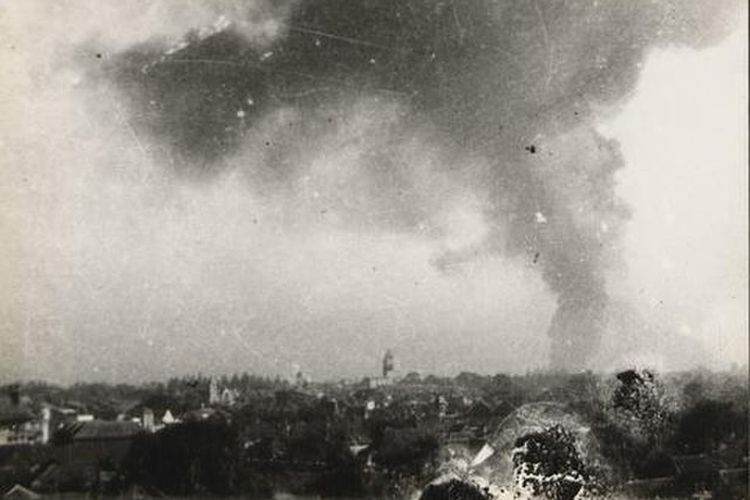
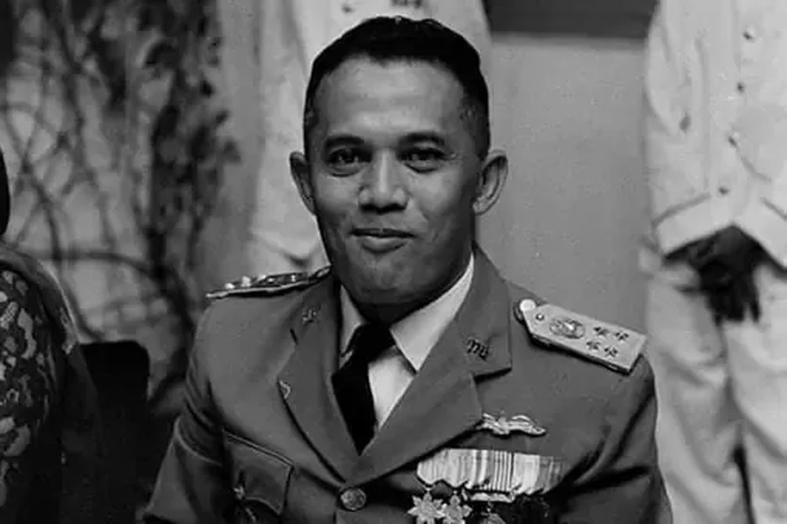
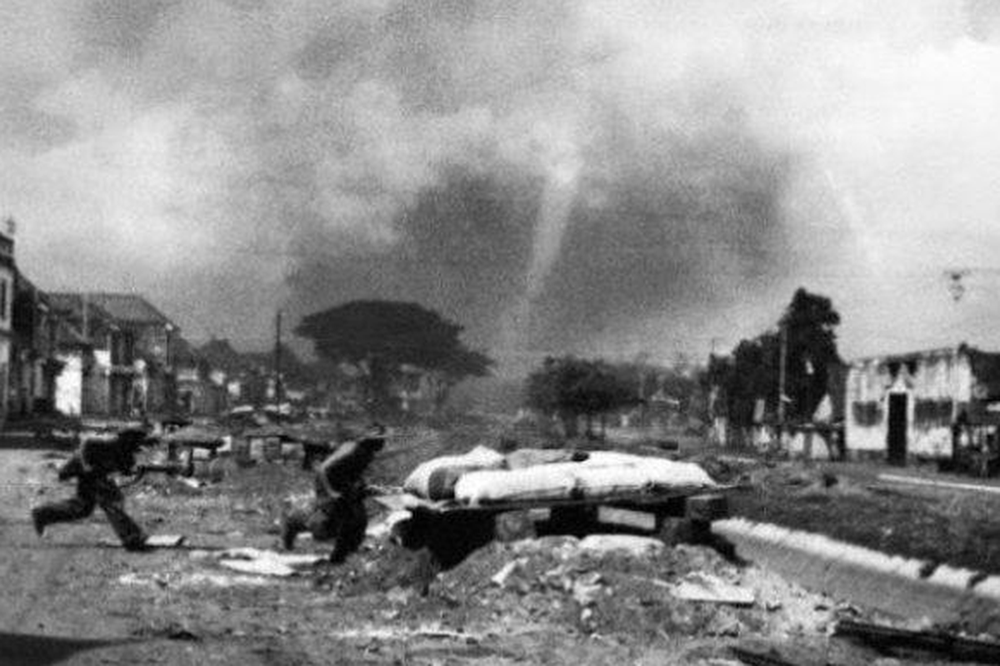
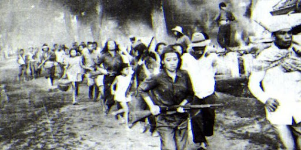
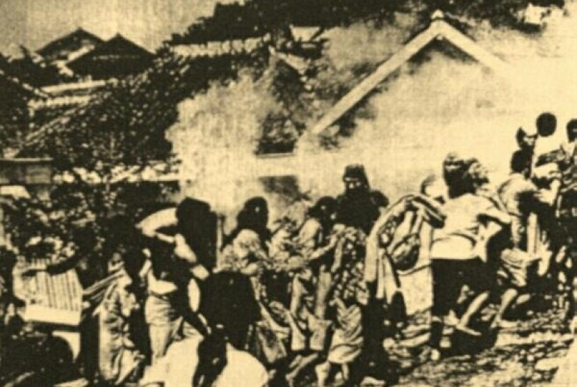

Peristiwa bersejarah pada masa Pasca Kemerdekaan Indonesia
Apa yang Terjadi?
Bandung Lautan Api adalah peristiwa pembumihangusan sebagian kota Bandung oleh rakyat dan pejuang Indonesia pada 23 Maret 1946. Tujuannya agar Bandung tidak dapat dikuasai oleh tentara Sekutu dan NICA setelah ultimatum yang mereka layangkan.

Dokumentasi Bandung Lautan Api, 1946
Siapa Saja yang Terlibat?
Rakyat Bandung – sekitar 200.000 jiwa terpaksa meninggalkan rumah mereka dan berjalan kaki ke arah selatan dan utara Bandung.
Tentara Republik Indonesia (TRI) – bersama laskar pejuang rakyat, mereka memimpin aksi pembakaran gedung dan menahan serangan musuh.
Kolonel A.H. Nasution – tokoh penting yang memimpin strategi bumi hangus.
Pihak Sekutu dan NICA – yang mengeluarkan ultimatum agar Bandung dikosongkan.

Kolonel A.H. Nasution, salah satu pemimpin militer
Kapan Itu Terjadi?
Puncak peristiwa Bandung Lautan Api terjadi pada malam 23 Maret 1946. Saat itu, dalam hitungan jam, Bandung Selatan berubah menjadi lautan api yang membara, meninggalkan kenangan heroik sekaligus duka.

Situasi Bandung pada tahun 1946
Di Mana Kejadiannya?
Peristiwa ini terjadi di Kota Bandung, terutama wilayah Bandung Selatan. Rakyat Bandung mengungsi ke daerah sekitar seperti Lembang dan Cimahi. Ruang kota yang ditinggalkan sengaja dibakar agar tidak bisa digunakan musuh.

Rakyat Bandung mengungsi setelah peristiwa pembakaran
Mengapa Bisa Terjadi?
Rakyat Bandung menolak ultimatum Sekutu yang memerintahkan pasukan Indonesia meninggalkan kota. Demi mempertahankan kehormatan bangsa dan mencegah musuh menggunakan fasilitas kota, Bandung dibumihanguskan.

Kondisi Bandung setelah pembumihangusan, 1946
Bagaimana Kejadiannya?
Pasukan TRI bersama rakyat secara sistematis membakar gedung-gedung penting, rumah, dan fasilitas umum. Asap tebal mengepul dan api menjalar ke seluruh penjuru Bandung Selatan. Rakyat meninggalkan rumah mereka sambil membawa barang seadanya menuju tempat aman.
 Apa yang Terjadi?
Apa yang Terjadi?